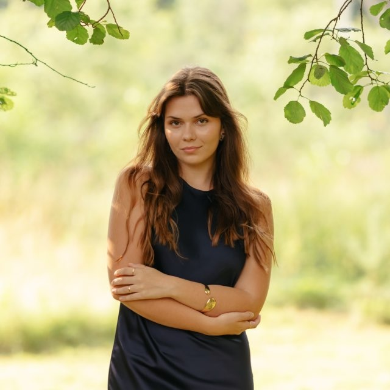
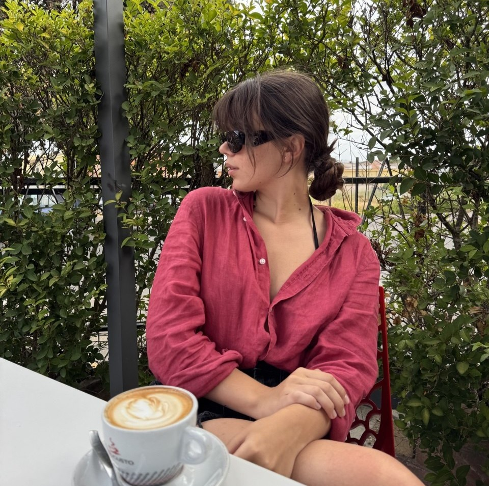
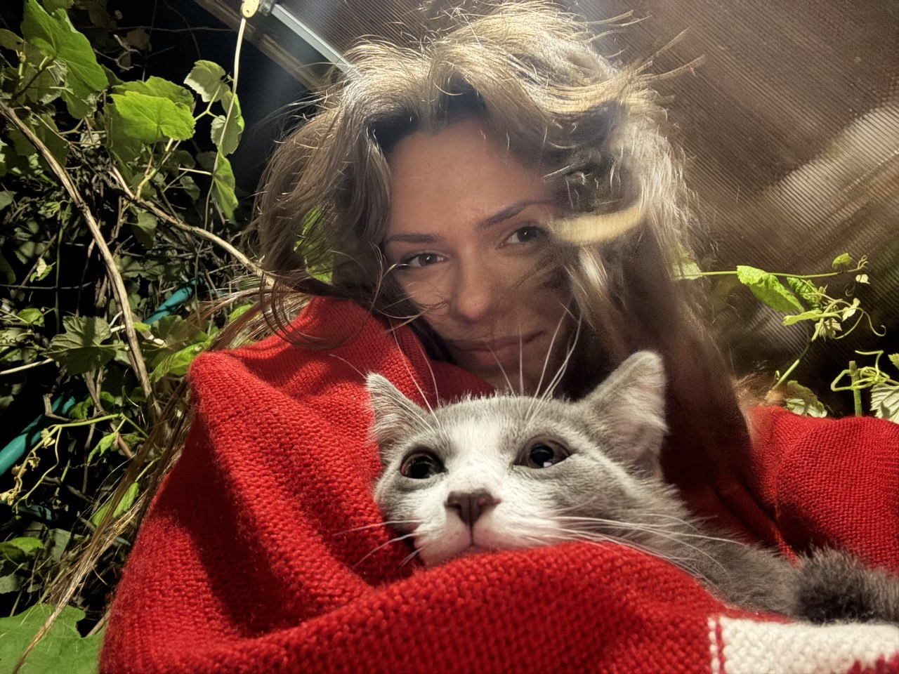
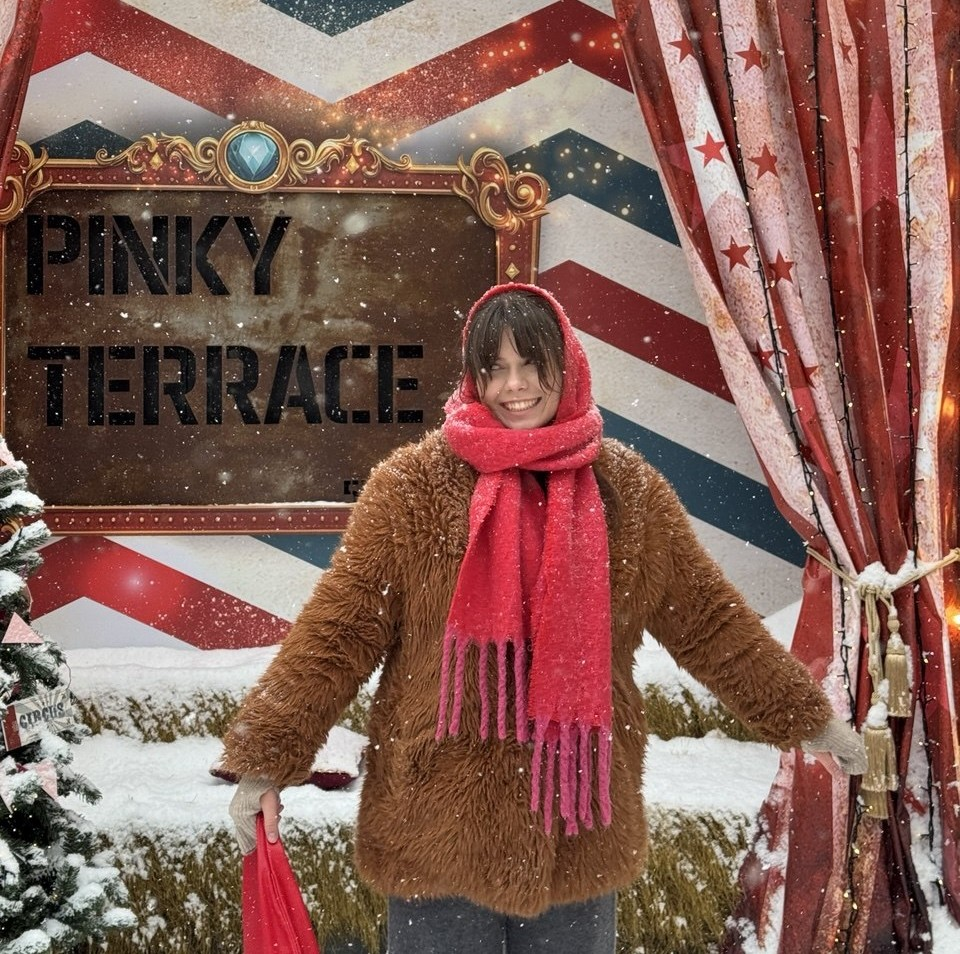

🎓 Student | 🐞 QA Tester | ✈️ Traveler | 🗣️ Language Learner
Welcome to my portfolio website. I am a student of Group 1451, passionate about software testing, information technology, and discovering new things. This website was created as part of my coursework to showcase my lab assignments and handouts in an interactive format.


